十二生肖本命佛奉请中心
-
原价
￥1880 -
折扣
1.0 -
节省
￥1682

-
原价
￥1880 -
折扣
1.0 -
节省
￥1682
 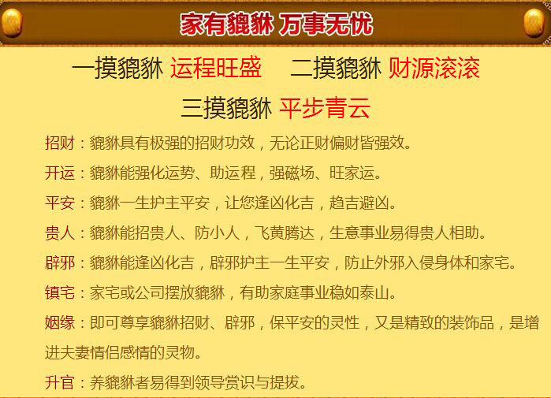 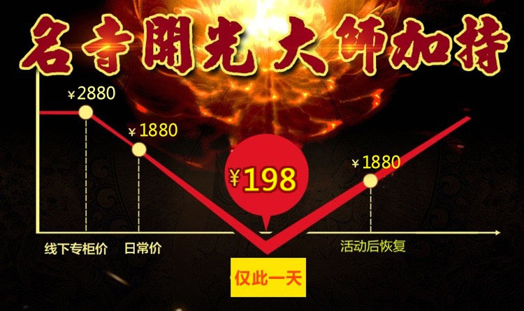 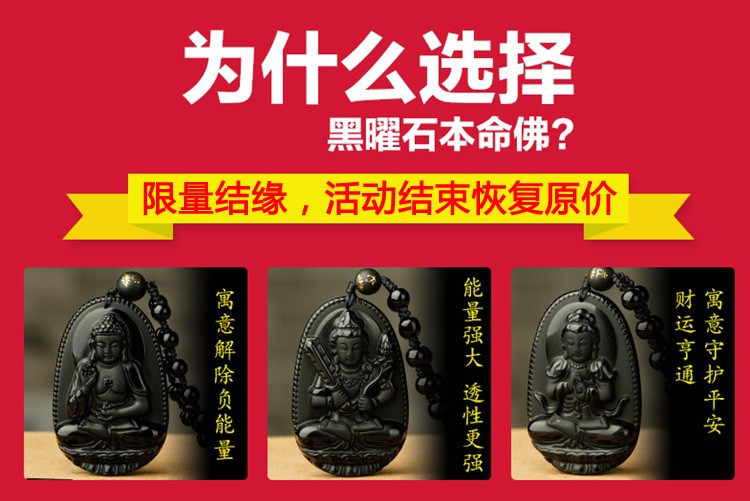
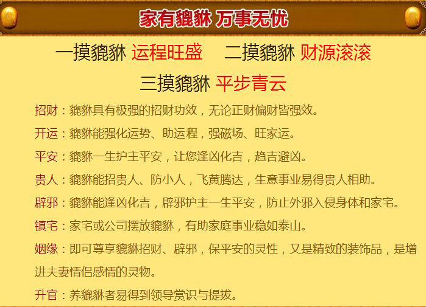 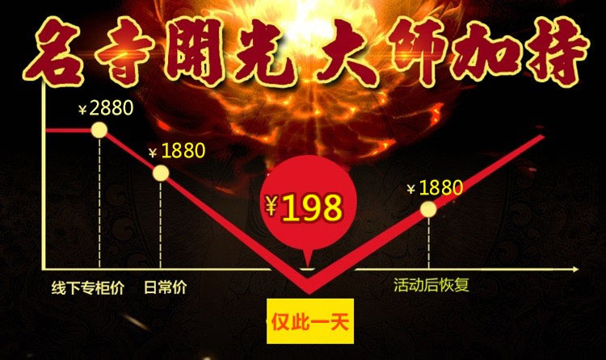 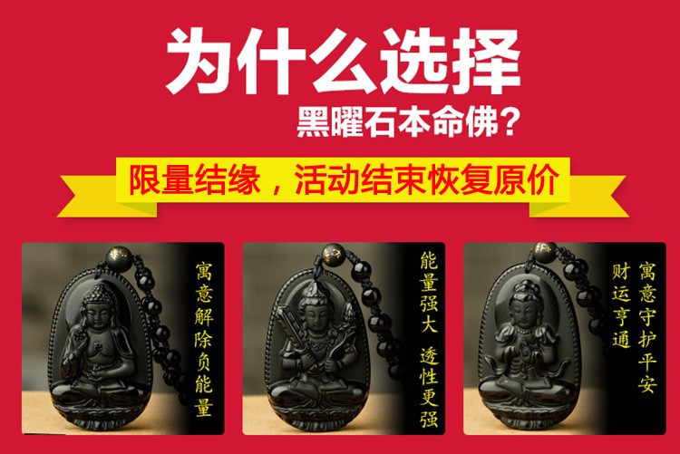
生肖决定运势
古人有一种说法，十二生肖对应十二地支（鼠 牛 虎 兔 龙 蛇 马 羊 猴 鸡 狗 猪 对应 子 丑 寅 卯 辰 己 午 未 申 酉 戌 亥）这个想必很多人都知道，但99%人都不知道的一个自古以来都存在的秘密，人的气运本有盛衰之别，即使是同一个人，在不同的时节里，也常能感到运途殊异之处。人们在面对这许多不可知的命数时，往往显得茫然、无助。但你可知道每个人先天上，都有一位守护神默默地护佑你，所生之日与有缘之佛结缘，被称为“守护神”或“本命佛”！
属相不同本命佛也不同，属相不同性格也不同，性格是决定运势的关键。本命佛主要是命里面缺少什么就补什么，佩戴者能够济财护身保平安，尤其本命年、逢九年时能打通流年关节，疏通流年运势，逢凶化吉，离苦得乐。
 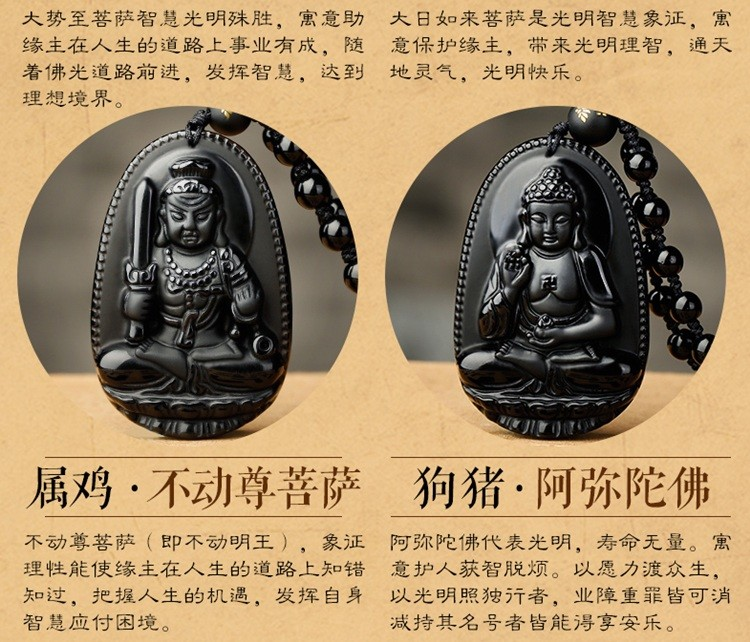
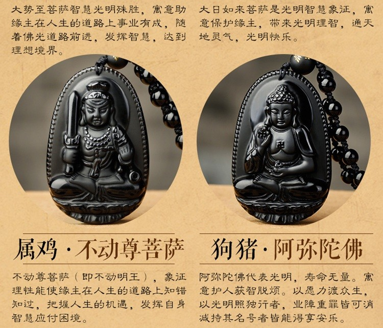 
特别提醒
本命佛不分男女、不限本命年，均可终身佩戴敬奉！
佩戴本命佛转运？
财运：
佩戴十二生肖本命佛能增强财星的活力，招财旺财，不久会有横财到手。
事业运
本命佛可以帮你清除事业上面的障碍，工作上让你遇到贵人，帮助你在事业上出现进一步发展的契机。
健康运
现代人工作疲惫、应酬较多火土之气淤积，脾胃疾病在所难免。生肖守护神能祛除邪气晦气，使人保持一颗平和的心态，不易滋生暗疾。
感情运
恋爱困难、夫妻矛盾、感情不顺的人佩戴十二生肖本命佛，能改变自身的气场，增强催旺桃花，巩固自身的爱情，异性缘也大大增加。
开光本命佛
十二生肖，是中国传统文化的重要部分，对个人运势有着至关重要的影响。12生肖受黄道12宫磁场与24节气影响，形成12种不同的特殊基因，从而影响个性和人生，影响十二生肖一生的运气等等。佩戴经过加持开光的本命佛这是富人的日常生活习惯，众多成功人士有今天的成就，本命佛的守护是不能排除的。然而不同类型材质的本命佛适合不同行业性格的人（请认真阅读以下文字）
 我们挑选三位大家熟知的名人为大家揭秘：
我们挑选三位大家熟知的名人为大家揭秘：
1.李嘉诚与本命佛的缘分
李嘉诚先生是世界十大富豪之一，拥有举世显赫的成就。但很少有人知道，他更是世界上最孝顺的人。
2005年底的时候，李嘉诚先生秘密来到到宝岛台湾，特意拜访了星云大师，为自己和母亲各自奉请本命佛！来化解本命年的所有诸多不好与不顺！星云大师赠送了李先生两尊本命佛。这本命佛一直陪伴在李先生的身边。
华人首富的成功不止是努力，还有日常的善心和智慧造就了这些成功！想要开运的缘主，注意每日为自己种下福报，相信一定会转运！
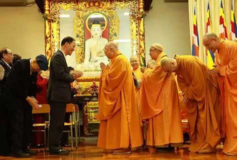
2.周润发与本命佛的缘分
周润发父母自幼就为他于某某居士那里奉请佩戴生肖羊之本命佛大日如来菩萨，大日如来菩萨能成就一切事业，使贵人来助，帮宏图大展。
周润发便借着大日如来菩萨一路披荆斩棘，毫无表演经验的他在应征无线电视演员训练班时险遭评委放弃，所幸的考官之一的钟景辉赏识，得贵人相助，便以一票通过说服了其他人录取了周润发。
1974年，周润发顺利从训练班毕业，经过短暂的龙套生涯，周润发很快就得到了演出机会。之后才华渐露的他，在TVB脱颖而出，迅速红遍大江南北直至今日。
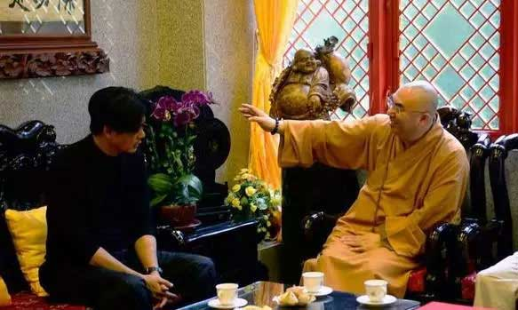
3.王菲与不动尊菩萨的缘分
王菲离婚，有一种说法是她是为了脱离红尘，遁入空门。从1992年至今，王菲一直是虔诚的佛教信徒，每次遭受媒体打击她都会选择潜心到寺院拜佛，在一次与星云大师密谈后，王菲佩戴了居士特意为她奉请的黑曜石不动尊菩萨，事至如今，王菲一直都将此物随身佩戴，本名佛能够默默的保护主人，助使主人很好的利用自身的智慧，应付种种困境，促使事业有成。
王菲是首位登上美国《时代周刊》封面的华语歌手， 2013年，王菲与李亚鹏离婚，非但并不影响她的事业。2014年王菲谢霆锋复合，重获自己的爱情。王菲依然完美如初。十四年的时间，让谢霆锋从一个稚嫩的男孩长成了男人，而王菲却仿佛让时间在她身上停驻一样，依旧冒着仙气。

该款材质本命佛的材质为天然黑曜石，为招财转运的女生男士首选招财本命佛， 在地下经历八千万年以上生长时间，才能真正的形成。在大自然界中被喻为石中精灵的灵动法宝，特殊的分子结构加上千万年来不断接受天地日月之精华，本命佛作为生肖守护神有着驱灾辟邪，招财纳福的作用，当这两种圣物聚集在一起就会有着强大的能量，不仅可以避免负面能量的干扰，还能除去霉运和晦气为您带来财运，最终拥有了超强的气场能量和令人难以置信的神奇力量。适合从事服务行业、零售业，以及收入起伏不定的人、彩民、股民和麻将缘友。
如何奉请到属于你的守护神？
根据佛教传承及“金、水、木、火、土”五大元素相生关系推出的十二属相之八尊护佑佛，是与十二属相者磁场最接近、感应力最强的属相护佑佛。若能虔诚敬奉，能使您逢凶化吉、平安如意、事业顺利、家庭幸福。朋友们若要请这些吉祥物请一定要按照自己的属相来请。
举例：假如你属猪，那么，建议你请阿弥陀如来，佩戴或者可挂在你的车上或者放在你的手包中。如此，你的财运事业、情感婚姻以及健康学业官运等能趋利避害、风生水起好运来。
开光本命佛都适合哪些人群？
1
做生意的人！
2
想让家人运势转好，好运加强，赶走邪气，镇宅辟邪的人。奉请已开光的本命佛，可令家运转好，好运加强，赶走邪气，有辟邪之功效，成为你的很好的守护神，保合家平安。
3
偏行，收入浮动者，例如销售、经商、外汇、股票、金融、彩马、期货、赌场等。开光本命佛有趋财旺财的作用，尤对偏行、收入浮动者有奇效。
4
对于家庭不合，破财，夫妻感情不合离婚等，本命佛也是必需的选择
5
如果遇到自己不喜欢的异性追求，也可以用本命佛化解桃花煞。
6
出去旅游的人。开光本命佛除煞辟邪能力都很强，出门在外带着保平安非常好。气，有辟邪之功效，成为你的很好的守护神，保合家平安。
7
经常乘坐交通工具的人。当遇到煞气，会使家人居住不安，损人破财家庭不合，车祸，血光，开刀，离婚等。而且是本命佛你心灵相通的守护神，转祸为祥之神。最擅化解五黄煞，天斩煞，穿心煞，镰刀煞，屋角煞，刀煞，白虎煞，阴气煞。。
【本 命 佛】+【天然黑曜石】+【正统开光】=3倍正能量
经过正统开光的黑曜石本命佛，长期佩戴能够清除负能量，让佩戴者在生活中逢凶化吉，在琐事中心如止水，有助于静气宁神，使睡眠更加安稳。
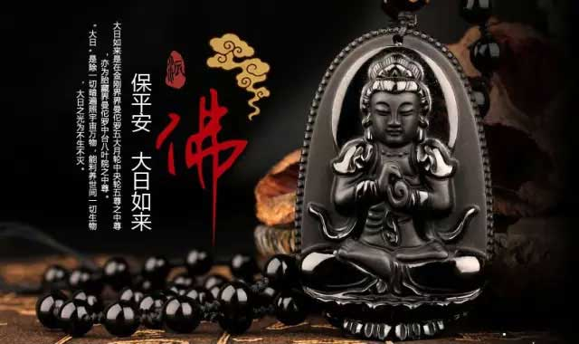
附带权威机构材质鉴定证书
为了让广大佛友奉请到正品天然材质的黑曜石本命佛，工作人员特携本命佛到国家权威机构检测并出具了鉴定证书，每一尊本命佛均有防伪材质鉴定，现佛友可放心奉请，阿弥陀佛！【提示：本命佛需在正规寺院结缘材质方可有保证，谨防合成玻璃！】
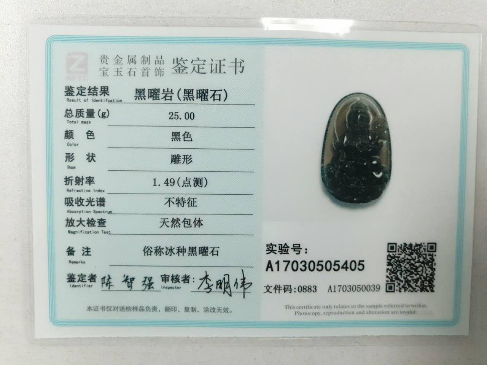
本命佛以“善为根，信为本”为宗旨，以“弘扬佛法，传播善念，祈福众生”为己任，为使广大缘友能结缘自己的终身守护佛--本命佛，是中国第一家把佛文化、易文化与民俗传统文化玉器、珠宝、法物等凝聚为一体，展示出深远的用意与独特的文化内涵，让佛法普度众生、劝恶向善、扶危济困的品德感染芸芸众生；以晶之“仁、义、智、勇、洁”带给世人吉祥如意，平安幸福！
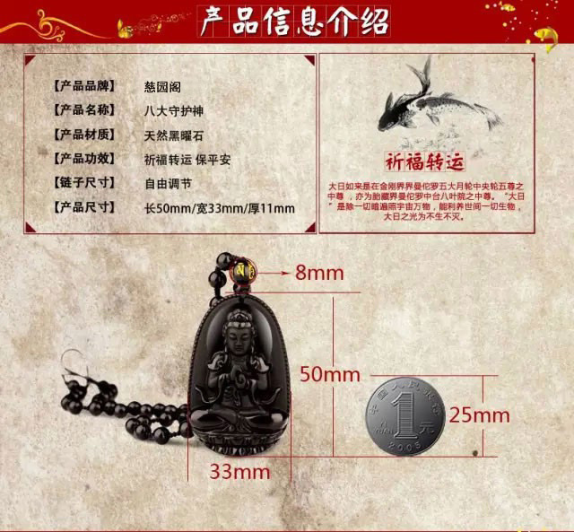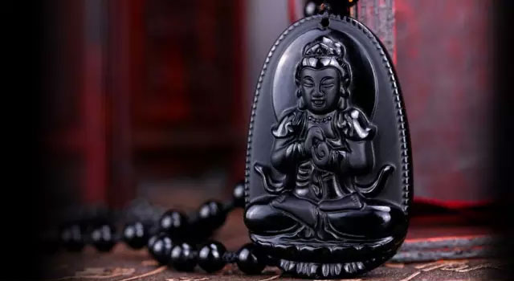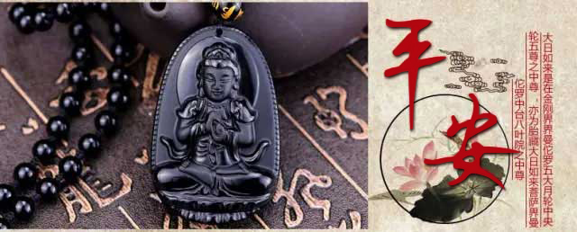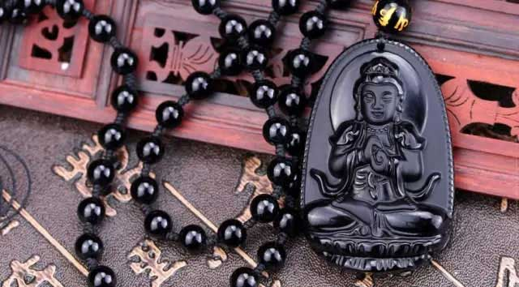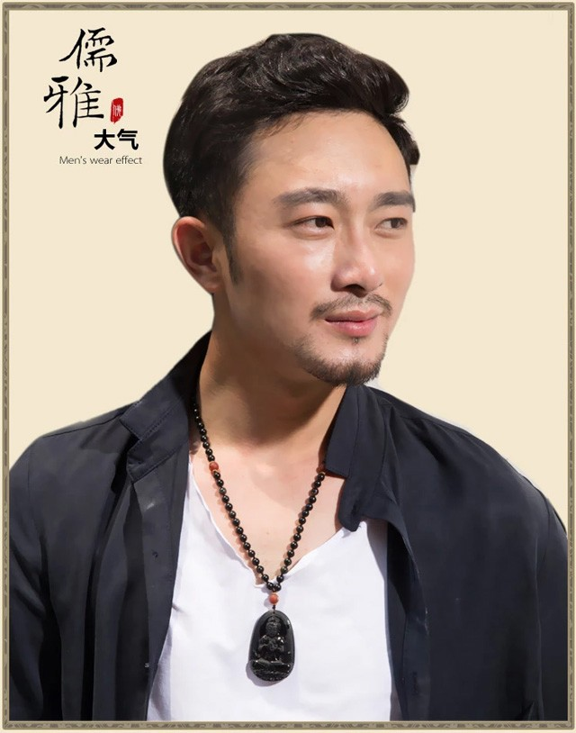【重要提醒】每尊本命佛的结缘善款为 198 元，福慧双修，功德无量！
每尊本命佛全都开光开运！佛法加持！保佑护身！
【重要提醒】
1、活动期间每尊本命佛原价1880，回馈广大缘主结缘价198元，数量有限！要请从速！！
2、支付宝订购，非常方便！
3、赶快奉请属于自已的本命佛吧!
佛法庄严！请您本着善意，在提交订单前确定请购意向！
佛到拒收即是“请佛回家，又赶佛出门”，此种恶因是万万不能种的！
最新评论
订单信息
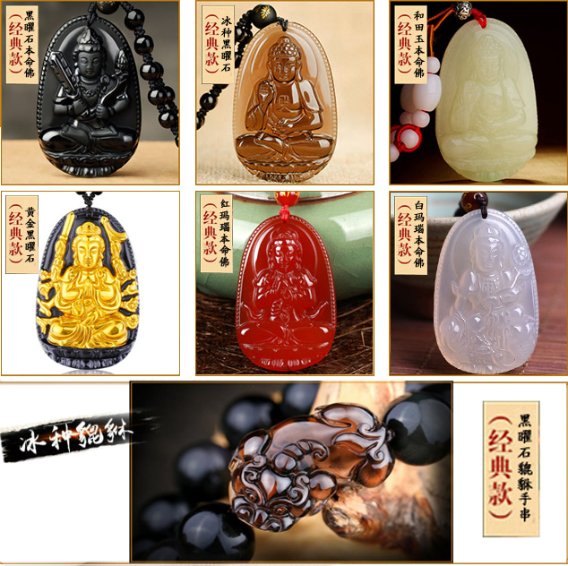


更多惊喜请关注微信公众号: 慈园阁
- [最新购买]：张**（130****3260）在1分钟前订购了 十二生肖天然黑曜石项链 肖鸡保护神--不动明王菩萨 √
- [最新购买]：李**（136****7163）在3分钟前订购了 十二生肖天然黑曜石项链 肖蛇保护神--普贤菩萨 √
- [最新购买]：赵**（139****1955）在7分钟前订购了 十二生肖天然黑曜石项链 肖兔守护神--文殊菩萨 √
- [最新购买]：刘**（180****6999）在9分钟前订购了 十二生肖天然黑曜石项链 肖蛇保护神--普贤菩萨 √
- [最新购买]：周**（151****2588）在4分钟前订购了 十二生肖天然黑曜石项链 肖鼠守护神--千手观音菩萨 √
- [最新购买]：王**（133****4096）在10分钟前订购了 十二生肖天然黑曜石项链 肖羊保护神--大日如来 √
- [最新购买]：秦**（139****1955）在15分钟前订购了 十二生肖天然黑曜石项链 肖羊保护神--大日如来 √
- [最新购买]：朱**（180****6999）在20分钟前订购了 十二生肖天然黑曜石项链 肖狗保护神--阿弥陀佛 √
- [最新购买]：吴**（151****2588）在12分钟前订购了 十二生肖天然黑曜石项链 肖羊保护神--大日如来 √
- [最新购买]：谭**（133****4096）在18分钟前订购了 十二生肖天然黑曜石项链 肖猴保护神--大日如来 √